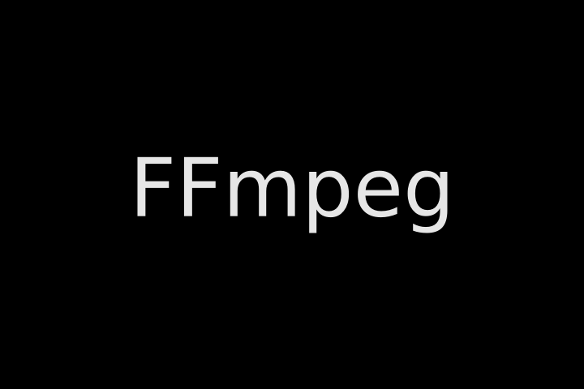

12. Image Sequences
12.1. Loop a Single Frame
ffmpeg -framerate 24 -loop 1 -i input.png -t 10 -c:v libx264 -pix_fmt yuv420p output.mp4
This can be tested using the image below:
12.2. Image Sequence to Video
Method 1:
ffmpeg -framerate 24 -pattern_type glob -i *.png -c:v libx264 -pix_fmt yuv420p output.mp4
Method 2:
ffmpeg -framerate 24 -i %06d.png -c:v libx264 -pix_fmt yuv420p output.mp4